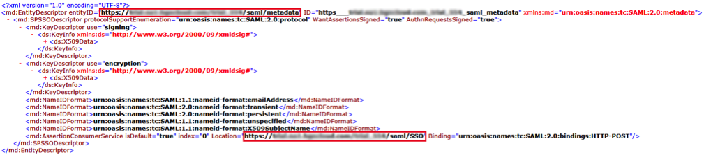
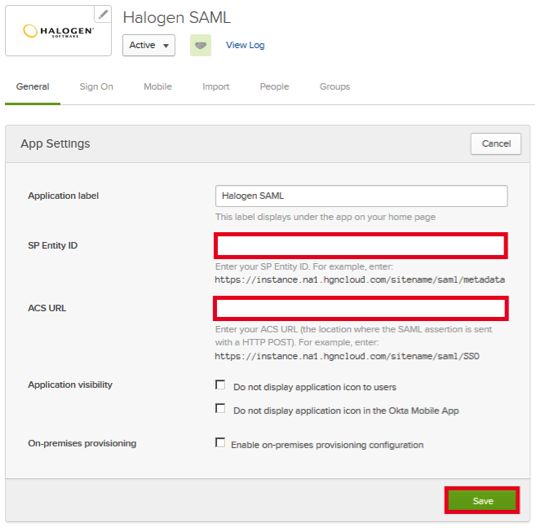
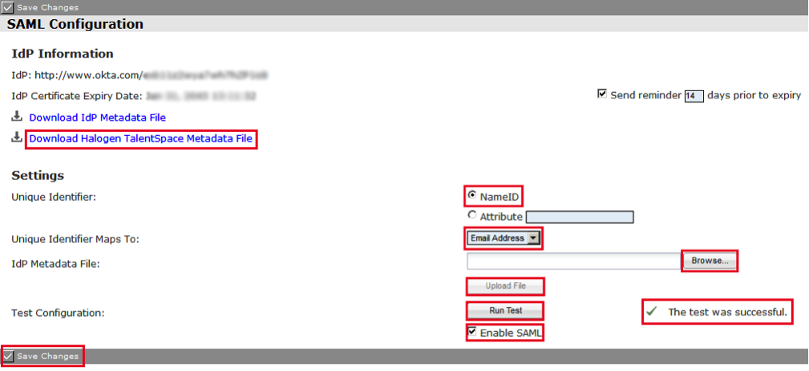

This setup might fail without parameter values that are customized for your organization. Please use the Okta Administrator Dashboard to add an application and view the values that are specific for your organization.
Generate the following IDP Metadata and save it to a file named metadata.xml:
Log into Halogen as an administrator.
Navigate to Options > SAML Configuration.
Enter the following information on the SAML Configuration page (see screenshot at end of step for reference):
Select Download Halogen TalentSpace Metadata File, save it to a file, then open it in a text editor:

Copy the value of entityID from the file (see above), and paste it into the SP Entity ID field in Okta (see below).
Copy the value of Location from the file (see above), and paste it into the ACS URL field in Okta (see below).

Unique Identifier: Select NameID
Unique Identifier Maps to: Select Email Address
IdP Metadata File:
Select Browse, then select the metadata.xml file you saved in step 1.
Select Upload.
Select Run Test, and wait for the The test was successful message.
Select Enable SAML.
Select Save Changes.

Done!
Notes:
SP-initiated flows and IDP-initiated flows are supported.
Just in Time (JIT) provisioning is not supported.
For SP-initiated flows, go to https://<yourBaseURL>/<yourSiteName>/welcome.jsp link.